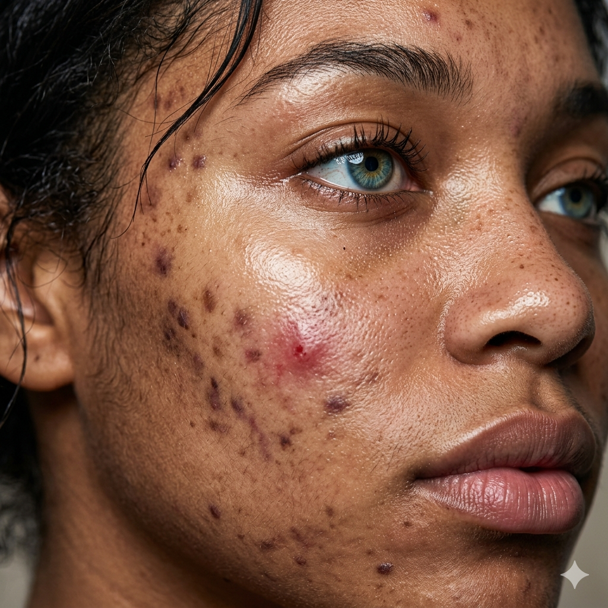
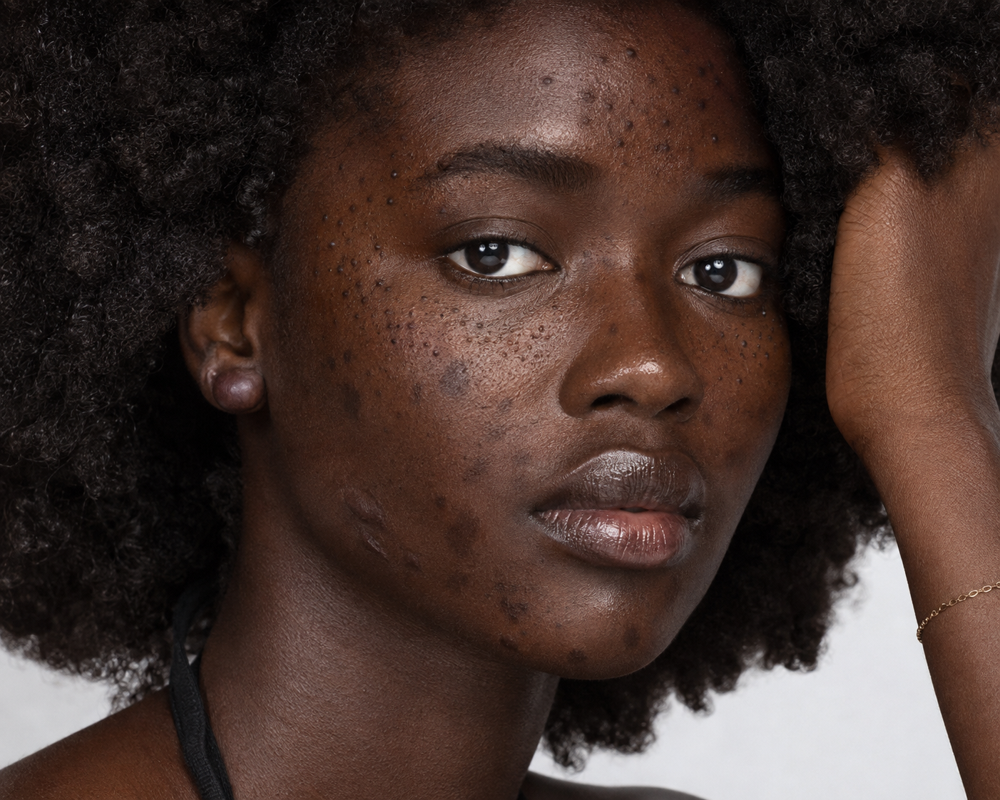
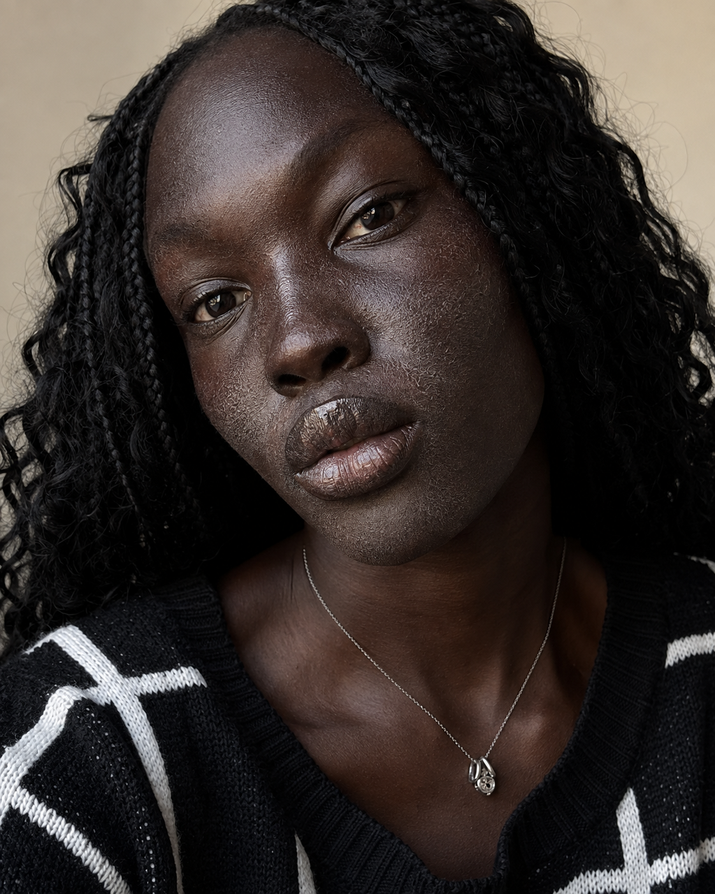
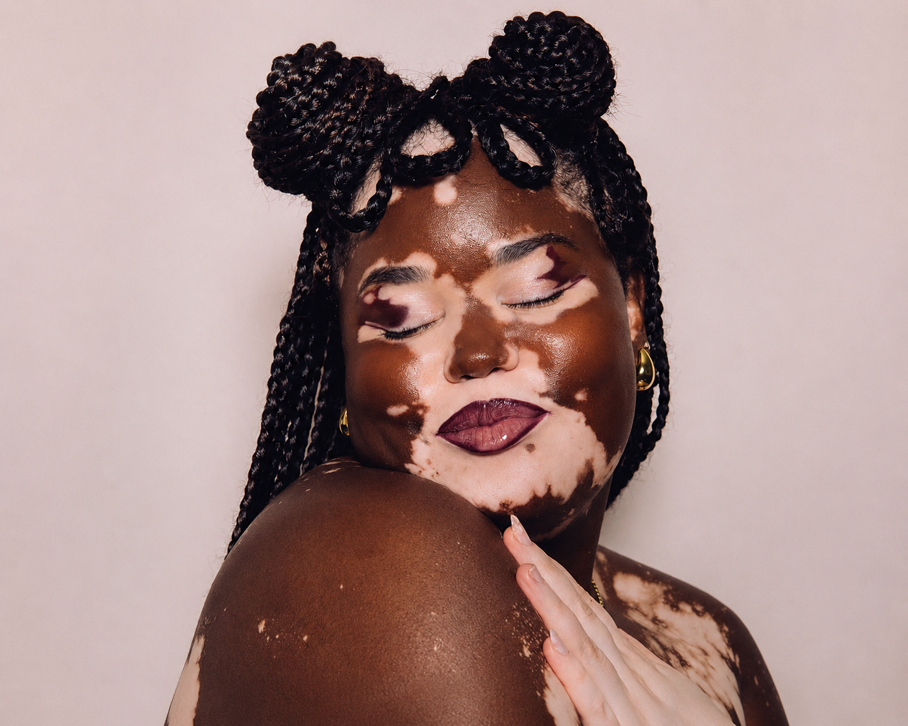
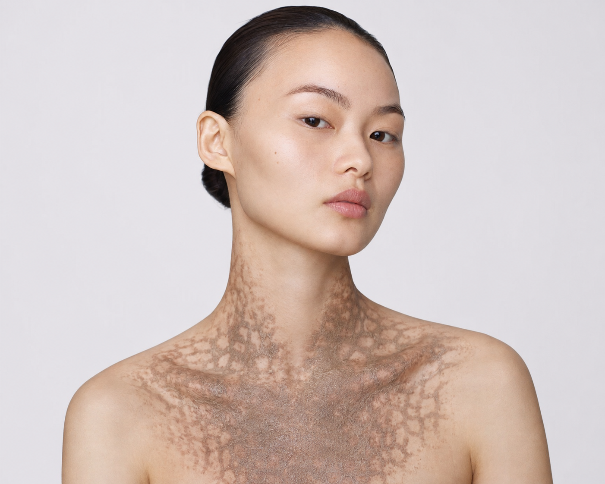

Skincare has no borders.
We are currently growing across 40+ countries, which include and skin types on the MST scale. We have trained dermatologists in these regions.
Warmth
Built for every skin tone. Powered by intelligent analysis. Guided by dermatologists.





Lumis Partners
Why Lumis exists
For too long, skincare has relied on research, products and technology that don't always reflect the diversity of real people.
At Lumis, we believe every person deserves care that understands their skin not just the most common skin tone in a dataset.
By combining intelligent skin analysis with licensed dermatologists, we help people get personalised care that's faster, more accessible and built around them.
Because better skincare starts with being seen.
Why people choose Lumis
We are currently growing across 40+ countries, which include and skin types on the MST scale. We have trained dermatologists in these regions.
Representing every MST skin tone across all ages and across multiple conditions, with one goal in mind.
Our platform only accommodates the best dermatologists in different regions and specialisations.